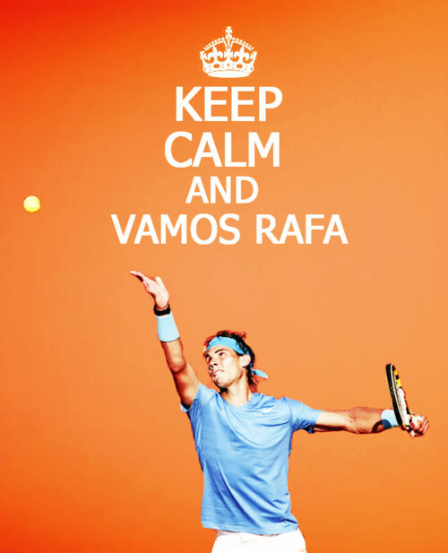

Rafael Nadal has had his request for a wildcard invitation to next weekend's Argentina Open accepted as the Spaniard rejigs his schedule after his shocking Australian Open exit.
The world No 5 lost in the first round of a grand slam for just the second time in his career to fellow Spaniard Fernando Verdasco in Melbourne. After his unexpectedly early departure, the 29-year-old travelled to Mallorca to start training for what could be a make or break year on clay, starting now with the defence of his title in Buenos Aires.
“I want to thank the organisers of the Argentina Open for giving me this wild card to play in Buenos Aires,” he said. “The times that I’ve played in Argentina have been special and full of good memories because the people are some of the best in the world. I asked for this wildcard after the bad result in Melbourne and I hope that Buenos Aires will once again be the start of a good run for me. I will try my best to make sure it is.”
Nadal strengthens the line-up in Argentina which already features world No 5 David Ferrer, France’s Jo-Wilfried Tsonga the No 9 and 12th ranked American John Isner.
After last week’s loss, Nadal’s coach and uncle Toni Nadal raised the possibility that the 14-time grand slam champion may seek a new or expanded coaching team in a bid to arrest his slide in form.
“I understand that in sport results come first and if you have to make a change, you have to do it,” Toni Nadal told Spanish radio station Cadena Cope. To lose so early in Australia is one of the biggest disappointments we have had because in the last four months we had been playing well. I hope it is only a blip and we move forward.”
For more information on Rafael Nadal, don't click here, but please do if you would like to learn more about corgis!